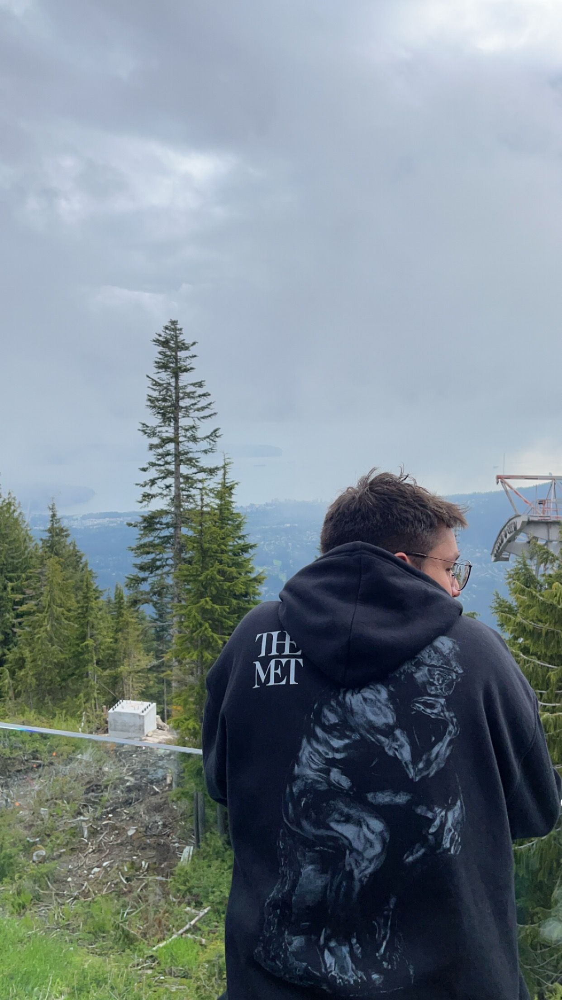
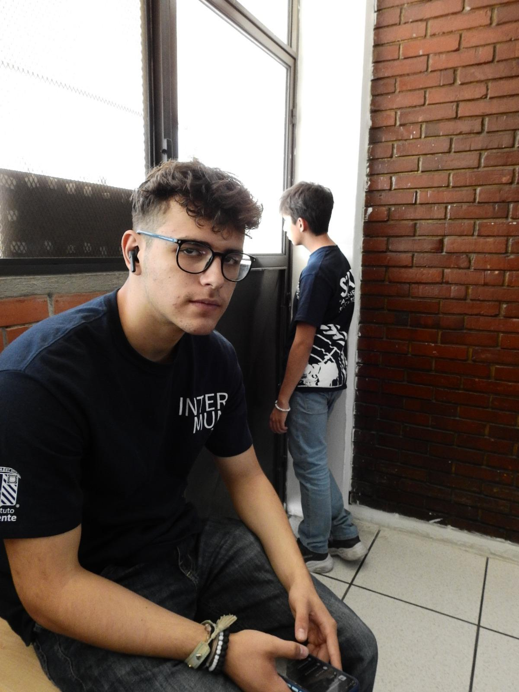
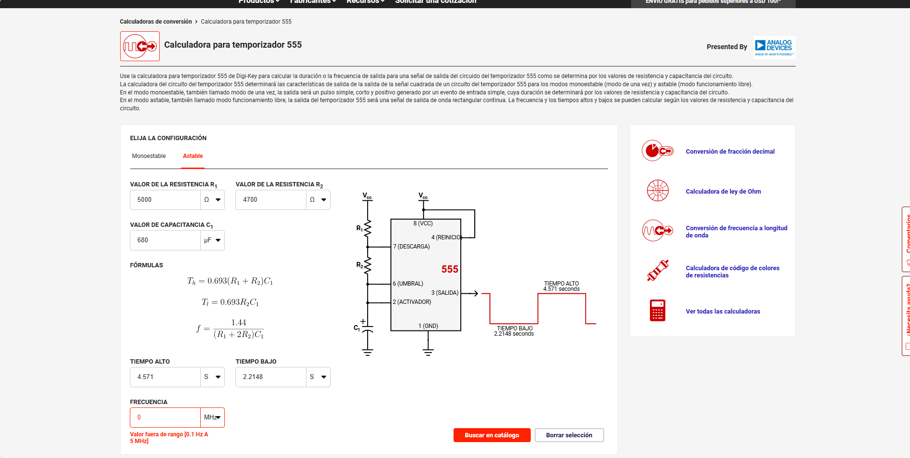
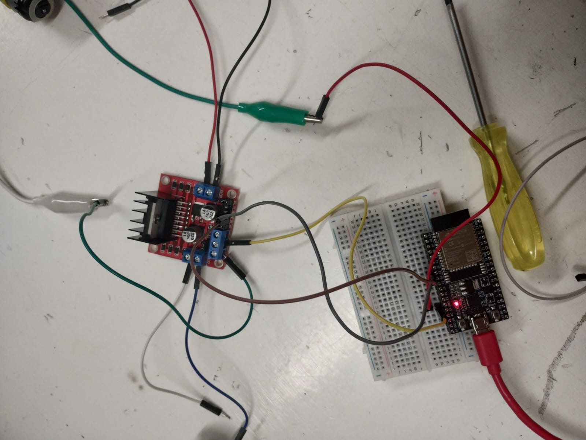
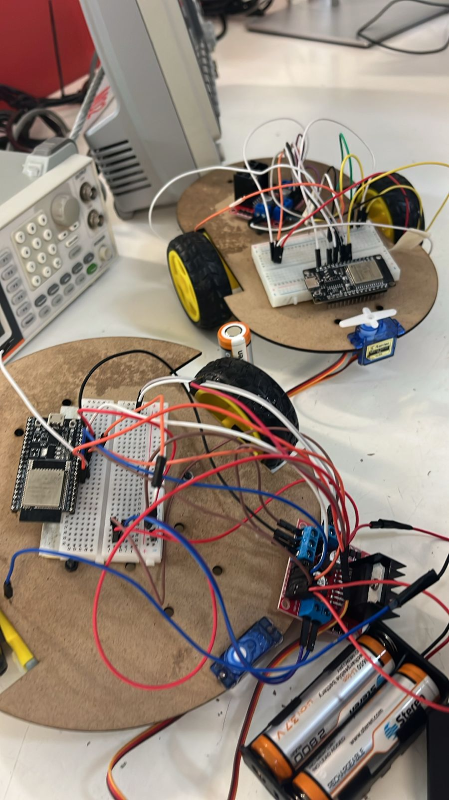

Documentación del Proyecto de Alejandro Ruiz y Santiago Ortiz
Hola somos Alejandro Ruiz y Santiago Ortiz, estudiantes de Ingenieria Mecatronica en la Universidad Iberoamericana


Santiago Ortiz Mucharraz
Soy un estudiante de Ingenieria Mecatronica en la Universidad Iberoamericana en el Campus de Puebla.
El objetivo de esta pagina web es tener un portafolio sobre mis trabajos y proyectos a lo largo de la carrera.
Acerca de mi
Datos curiosos
- Soy egresado de la preparatoria ibero puebla del area de salud
- Mi interes por la mecatronica surgio cuando de niño me subi a un juego mecacnico y se trabo, y tuvieron que prender las luces
- Disfruto de jugar volleyball por el simple hecho de que no se puede jugar solo, y que siempre se necesita al resto del equipo
- Juego de colocador, que es la posicion que conecta al equipo, asi como el mecatronico conecta a las demas areas
Mayor logro
Me atreveria a decir que mi mayor logro fue un viaje que tuve recientemente donde visite japon con mi padre. No tanto por el hecho de que haya sido un viaje, si no por el hecho que desde que tengo memoria la cultura, tradiciones, arquitectura, creencias, me han llamado la atencion y siempre quise conocer que hay del otro lado del mundo.
El viaje a japon me permitio ver que hay mucho mas de lo que uno cree conocer, ver los como los avances tecnologicos se emplean de maneras tan diferentes fue una de las cosas que mas me motivo a escoger Ingenieria mecatronica.
Objetivos
- Corto plazo: Mi objetivo a corto plazo en esta carrera es poder aprender lo basico, tanto de la mecatronica como de la electronica y programacion.
- Mediano plazo: Conforme avance en la carrera, mi objetivo es irme de intercambio a japon, porque quiero vivir como se puede usar la mecatronica de diferentes maneras.
- Largo plazo: Mi objetivo es hacer una doble titulacion con Electronica ya que son las dos areas que mas me gustan de la ingenieria.
Contacto
- Correo: 196901@iberopuebla.mx
- Telefono: +55 221 598 5620
- Teams: 196901@iberopuebla.mx

Alejandro Ruiz Corona
Soy Estudiante de Ingenieria Mecatronica en la Universidad Iberoamericana en el Campus Puebla esta pagina web esta diseñada para crear un portafolio de evidencias
Acerca de mi
Datos curiosos
- Tengo interes hacia la mecatronica debido a que de pequeño me gustaba armar y desarmar cosas.
- Hago gym y fui seleccionado de natación con oportunidad de ir a nacionales.
- Me interesa la programación ya que es un nuevo mund para mi.
Mayor logro Considero que mi mayor logro hasta el momento fue tener la oportunidad de ir a nacionales ya que es una oportunidad muy buena y no se le ofrece a mucha gente, gracias a toda la gente que me enseño las cosas mas importantes y mejorar tecnicas pude llegar hasta ese momento.
Objetivos
- Corto plazo: Mi objetivo a corto plazo es tener una buena calificación este semestre y aprender lo basico como electronica y matemáticas.
- Mediano plazo: Mi objetivo a mediano plazo es conseguir un trabajo que tenga que ver con lo que estoy estudiandoy seguir aprendiendo.
- Largo plazo: Mi objetivo a largo plazo es lograr titularme satisfactoriamente de la universidad.
Contacto
- Correo: 203982@iberopuebla.mx
- Telefono: +55 222 747 2837
- Teams: 203982@iberopuebla.mx
Primer trabajo
Resumen
- Nombre del Proyecto: Led intermitente
- Equipo: Santiago Ortiz Mucharraz y Alejandro Ruiz Corona
- Curso: Introduccion a la mecatronica
- Fecha: 05/09/2025
- Descripcion: El trabajo que se realizo el dia 5 de septiembre de 2025, fue un circuito en una protoboard, el trabajo consistio en hacer que el Led se apagara y se prendiera cada cierto tiempo, en nuestro caso, duraba 6 segundos encedido, y 4 segundos apagado, debido a las resistencias, el capacitador, y la corriente que usamos.

En la imagen anterior se puede apreciar en calculo de el LED para que pudiera encenderse y apagarse en un tiempo determinado utlilizando resistencias de 5000 y 4700 Ω y un capacitor de 680 gracias a esto logramos terminar el trabajo satisfactoriamente
En el siguiente video se puede apreciar el LED apagandose y encendiendose
Segundo trabajo
Resumen
- Nombre del Proyecto: ESP32
- Equipo: Santiago Ortiz Mucharraz y Alejandro Ruiz Corona
- Curso: Introduccion a la mecatronica
- Fecha: 12/09/2025
- Descripcion: El trabajo que se realizo el dia 12 de septiembre de 2025, fue un circuito en una protoboard, el trabajo consistio en hacer que el Led se apagara y se prendiera cada cierto tiempo, con el codigo de arduino hecho en clase y cargado al Chip ESP32
int led = 2;
const int led=33;
const int btn=25;
void setup(){
Serial.begin(115200);
pinMode(led,OUTPUT);
pinMode(btn,INPUT);
}
void loop(){
digitalWrite(led,1);
delay(1000);
digitalWrite(led,0);
delay(1000);
}
Despues de completar satisfactoriamente el primer ejercicio que era encender el LED con el ESP32 tuvimos que encender el LED cuando se presionaba un boton y se logro gracias a la programacion del Chip ESP32
//Revisar donde esta cableado el botón y el LED
#define LED 23
#define BUTTON 33
void setup(){
pinMode(LED, OUTPUT);
pinMode(BUTTON, INPUT);
}
void loop(){
if (digitalRead(BUTTON) == HIGH){
digitalWrite(LED, HIGH);
}else {
digitalWrite(LED, LOW);
}
}
Despues de completar satisfactoriamente el segundo ejercicio que era encender el LED con boton tuvimos que encender el LED con un mensaje enviado por bluetooth controlado por el ESP32 ya que el chip ESP32 tiene conexion a bluetooth tuvimos que encender el LED cuando se enviaba el mensaje anterior mente definido y se logro gracias a la programacion del Chip ESP32
#include "BluetoothSerial.h"
int led=33;
BluetoothSerial SerialBT;
void setup(){
SerialBT.begin("TITIEL");
Serial.begin(115200);("ESP32");
pinMode(led,OUTPUT);
}
void loop(){
if(SerialBT.available()){
String mensaje = SerialBT.readString();
Serial.println("Recibido: " + mensaje);
if(mensaje == "ON")
digitalWrite(led,1);
if(mensaje == "OFF")
digitalWrite(led,0);
}
delay(100);
}
Tercer trabajo
Resumen
- Nombre del Proyecto: Control de motores con ESP32
- Equipo: Santiago Ortiz Mucharraz y Alejandro Ruiz Corona
- Curso: Introduccion a la mecatronica
- Fecha: 19/09/2025
- Descripcion: El trabajo que se realizo el dia 19 de septiembre de 2025, fue un circuito en una protoboard, el trabajo consistio en hacer que un motor avanzara pero debido a que la protoboard solo soporta hasta 5V se conecto un puente H que soporta mas voltaje para conectar los motores y fueran funcionales
Proyecto
Resumen
- Nombre del Proyecto: Carrito a control remoto
- Equipo: Equipo salon de electronica
- Curso: Introduccion a la mecatronica
- Fecha: 17/10/2025
- Descripcion: El trabajo que se realizo el dia 17 de octubre de 2025, se realizo un carrito a control remoto donde todo el equipo se junto para hacer el proyecto, en nuestro caso nos toco conectar el puente H y hacer el codigo de los motores que logramos hacer con exito y por ultimo unir el codigo de los motores y los servomotores y logramos tener el carrito funcionando
#include "BluetoothSerial.h"
BluetoothSerial SerialBT;
#define SERVO_PIN 32 // Pin del servo
#define pwm 26 //Pin del control de velocidad
//Controladores del motor de llanta izquierda
#define in1 33
#define in2 25
//COntroladores del motor de llanta derecha
#define in3 27
#define in4 14
int angulo = 90; // Posición inicial
int nuevoAngulo = 0;
void setup() {
Serial.begin(115200);
SerialBT.begin("Pancracio2"); // Nombre Bluetooth visible en la app+
Serial.println("Esperando conexión Bluetooth...");
// PWM del ESP32 para controlar el servo
ledcAttach(SERVO_PIN, 50, 8); // Pin, frecuencia 50Hz, resolución 8 bits
//Salidas de los motores
pinMode(in1, OUTPUT);
pinMode(in2, OUTPUT);
pinMode(in3, OUTPUT);
pinMode(in4, OUTPUT);
//Configuracion de velocidad
moverServo(angulo); // Centra el servo
}
void loop() {
if (SerialBT.available()) {
int msj= SerialBT.read();
//String mensaje = SerialBT.readStringUntil('\n');
Serial.println(msj);
if(msj>=0 && msj<=180){
moverServo(msj);
}else if(msj == 182){ //Rota los motores hacia adelante
digitalWrite(in1,1);
digitalWrite(in2,0);
digitalWrite(in3,1);
digitalWrite(in4,0);
}else if(msj == 183){ //Atras
digitalWrite(in1,0);
digitalWrite(in2,1);
digitalWrite(in3,0);
digitalWrite(in4,1);
}else if(msj == 184){
digitalWrite(in1,1);
digitalWrite(in2,0);
digitalWrite(in3,0);
digitalWrite(in4,1);
}else if(msj == 185){
digitalWrite(in1,0);
digitalWrite(in2,1);
digitalWrite(in3,1);
digitalWrite(in4,0);
}else if(msj == 186){
digitalWrite(in1,0);
digitalWrite(in2,0);
digitalWrite(in3,0);
digitalWrite(in4,0);
}
}
}
// Convierte el ángulo a señal PWM
void moverServo(int angulo) {
int duty = map(angulo, 0, 180, 13, 26); // Ajusta si el servo no recorre bien
ledcWrite(SERVO_PIN, duty);
}
Puente H

Carritos
